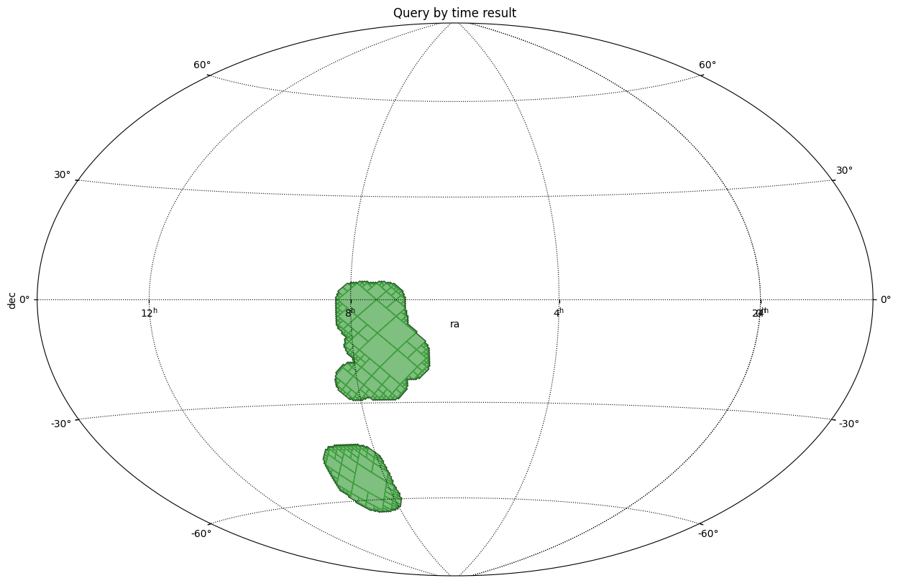

Space and time MOC¶
[1]:
import astropy.units as u
import matplotlib.pyplot as plt
from astropy.coordinates import Angle, SkyCoord
from astropy.table import Table
from astropy.time import Time, TimeDelta
from astropy.visualization.wcsaxes.frame import EllipticalFrame
from mocpy import MOC, STMOC, WCS, TimeMOC
[2]:
# Load 2MASS data
data = Table.read("./../resources/STMOC/2MASS-list-images.fits.gz", format="fits")
times_start = Time(data["mjd"].data, format="mjd", scale="tdb")
times_end = times_start + TimeDelta(1800, scale="tdb", format="sec")
positions = SkyCoord(data["ra"].quantity, data["dec"].quantity)
[3]:
%%time
# Create a cone footprint from the first 10000 observations
num_observations = 10000
spatial_coverages = [
MOC.from_cone(pos.ra, pos.dec, radius=5 * u.deg, max_depth=7)
for pos in positions[:num_observations]
]
print("Number of rows in 2MASS: ", len(spatial_coverages))
# Create a STMOC from those 10000 spatial coverages associated with their observational time ranges
stmoc = STMOC.from_spatial_coverages(
times_start[:num_observations],
times_end[:num_observations],
spatial_coverages,
)
Number of rows in 2MASS: 10000
CPU times: user 3.76 s, sys: 70.5 ms, total: 3.83 s
Wall time: 3.72 s
[4]:
tmoc = TimeMOC.from_time_ranges(
min_times=Time(["1998-01-01"], format="iso", scale="tdb"),
max_times=Time(["1999-01-01"], format="iso", scale="tdb"),
delta_t=TimeDelta(1e-6, scale="tdb", format="sec"),
)
moc = stmoc.query_by_time(tmoc)
[5]:
fig = plt.figure(111, figsize=(15, 10))
# Define a astropy WCS easily
with WCS(
fig,
fov=160 * u.deg,
center=SkyCoord(90, 0, unit="deg", frame="icrs"),
coordsys="icrs",
rotation=Angle(0, u.degree),
projection="AIT",
) as wcs:
ax = fig.add_subplot(1, 1, 1, projection=wcs, frame_class=EllipticalFrame)
# Call fill with a matplotlib axe and the `~astropy.wcs.WCS` wcs object.
moc.fill(ax=ax, wcs=wcs, alpha=0.5, fill=True, color="green")
moc.border(ax=ax, wcs=wcs, alpha=0.5, color="black")
plt.xlabel("ra")
plt.ylabel("dec")
plt.title("Query by time result")
plt.grid(color="black", linestyle="dotted")
plt.show()
